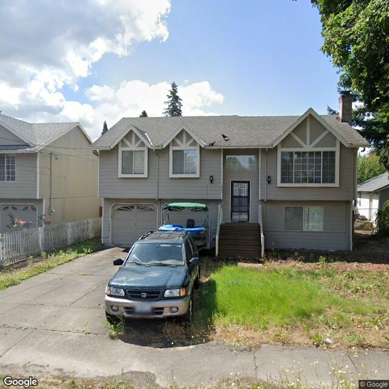
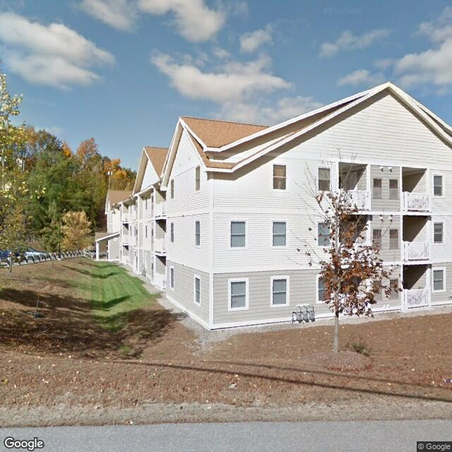
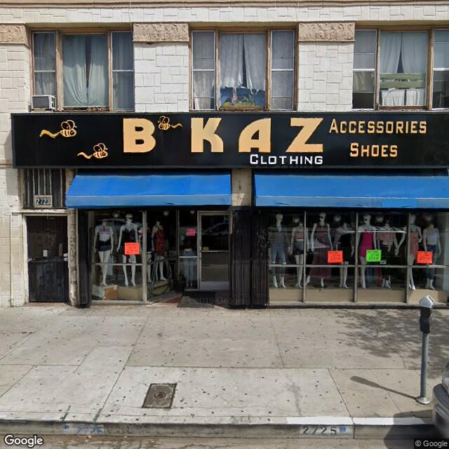

Occupancy Classifier¶
The Occupancy Classifier is a module built upon the Generic Image Classifier module.
The module is shipped with BRAILS, so you don’t have to install it standalone if you’ve installed BRAILS following the Installation instruction.
It takes a list of street view images of residential buildings as the input, and classify the buildings into three categories: RES1 (single family building), RES3 (multi-family building), COM(Commercial building).
Note
The reference to a pretrained model is shipped with BRAILS and the first time you use this module, it will download that model from the internet to your local computer. This will allow you to use it directly without training your own model.
The current pretrained model was trained with 15,743 labeled images utilizing ResNet50. To perform the training a number of buildings with the occupancy classifications desired were identified from OpenStreetMaps and a dataset provided by New Jersey Department of Environmental Protection (NJDEP), including 7,868 RES1 (2,868 ‘detached’ from OpenStreetMap + 4,999 ‘RES1’ from NJDEP), 5,074 RES3 (2,207 ‘apartment’ from OpenStreetMap and 2,867 ‘RES3’ from NJDEP), and 2,804 COM (2,418 ‘commercial’ from OpenStreetMap + 386 ‘COM’ from NJDEP), respectively. Satellite images for those buildings were obtained using Google Maps, and these images were placed into one of three folders as discussed in Generic Image Classifier module.
As mentioned in the introduction, SimCenter is constantly updating these trained models. The simplest way to get the latest model is to update your BRAILS installation. This can be done by issuing the following in a terminal/powershell window:
pip install -U BRAILS –upgrade
Use the module¶
A pretrained model is shipped with BRAILS. So you can use it directly without training your own model.
The first time you initialize this model, it will download the model from the internet to your local computer.
The images used in the example can be downloaded from here.
# import the module
from brails.modules import OccupancyClassifier
# initialize an occupancy classifier
occupancyModel = OccupancyClassifier()
# define the paths of images in a list
imgs = ['image_examples/Occupancy/RES1/36887.jpg',
'image_examples/Occupancy/RES3/37902.jpg',
'image_examples/Occupancy/COM/42915.jpg']
# use the model to predict
predictions = occupancyModel.predict(imgs)
The predictions look like this:
Image : image_examples/Occupancy/RES1/36887.jpg Class : RES1 (100.0%)
Image : image_examples/Occupancy/RES3/37902.jpg Class : RES3 (100.0%)
Image : image_examples/Occupancy/COM/42915.jpg Class : COM (100.0%)
Results written in file tmp/occupancy_preds.csv
Sample images used in this example are:

Fig. 4.2.7 Predicted as Single-family Building¶ |

Fig. 4.2.8 Predicted as Multi-family Building¶ |

Fig. 4.2.9 Predicted as Commercial Building¶ |
Note
The classifier takes an image as the input and will always produce a prediction. Since the classifier is trained to classify only a specific category of images, its prediction is meaningful only if the input image belongs to the category the model is trained for.
Retrain the model¶
You can retrain the existing model with your own data.
# Load images from a folder
occupancyModel.loadData('folder-of-images')
# Re-train it for only 1 epoch for this demo. You can increase it.
occupancyModel.retrain(initial_epochs=1)
# Test the re-trained model
predictions = occupancyModel.predict(imgs)
# Save the re-trained model
occupancyModel.save('myCoolNewModelv0.1')